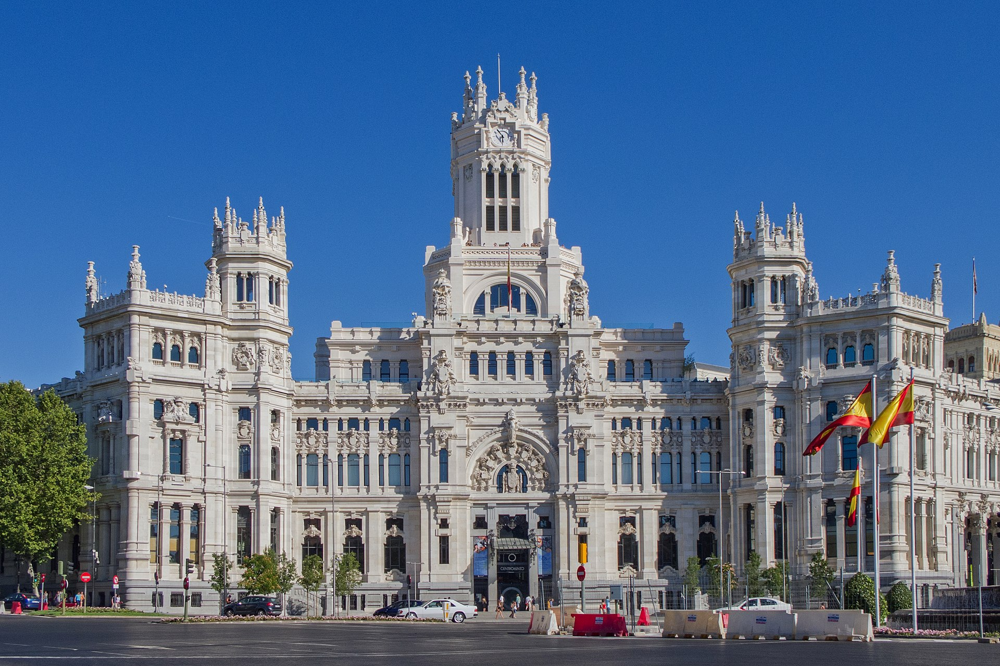
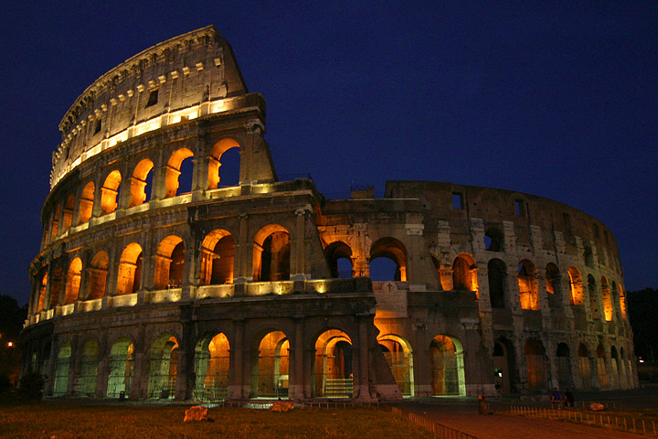

Madrid
Madrid España[1] y de la Comunidad de Madrid, que es uniprovincial. También conocida como La Villa y Corte, es la ciudad más grande y poblada del pais, alcanzando oficialmente tos 3.213.271 habitantes dentro de su nunicipio. [2] [3] mientras que la cifra oficiosa dei padrona a 1 de enerо de 2009 es de 3.273.006 según el ayuntamiento[4] v 6.043.031[5] em su Area metropolitana, siendo por ello la tercera coudad más poblada de Ja Unión Europes por detrás de Berlin y Londres y in tercera área metropolitana, por detrás de las de Paris y Londres. Roma Es una ciudad del sur de Europa, ubicada en Capital de la Republica Italiana, es también la la peninsula Itálica. chudad más populusa de is misima, cabeza (en italiano capoluogo) de la provincia del mismo nombre Vide la región del Lacio. Su superficie es de 1.285 km. Durante su larga historia ha sido la sede del Imperia romana Es el centro espiritual l del catolicismo, Su centro histórico, donde se entremezclan restos de casi tres milenios, ha sido sido declarada Patrimonio

Roma
Es una ciudad del sur de Europa, ubicada en Capital de la Republica Italiana, es también la la peninsula Itálica. chudad más populusa de is misima, cabeza (en italiano capoluogo) de la provincia del mismo nombre Vide la región del Lacio. Su superficie es de 1.285 km. Durante su larga historia ha sido la sede del Imperia romana Es el centro espiritual l del catolicismo, Su centro histórico, donde se entremezclan restos de casi tres milenios, ha sido sido declarada Patrimonio de la humanidad por is UNESCO

París
Paris es la capital de Francia y de la región de Isla de Francia. Constituida en la única comuna unidepartamental del pais, está situada a ambos märgenes de un largo meandro del rio Sena, en el centro de la Cuenca parisina, entre la confluencia del rio Marne y el Sena aguas arriba, y el Olse y el Sena aguas abajo. La ciudad de Paris dentro de sus estrechos limites administrativos tiene una población 2.181.374 habitantes (2006).[1] Sin embargo, durante el siglo XX, el área metropolitana de Paris se expandio más allá de las limites del municipio de Paris. Su ares urbana, la más grande de Europa, tiene una población de 11.769.433 habitantes.